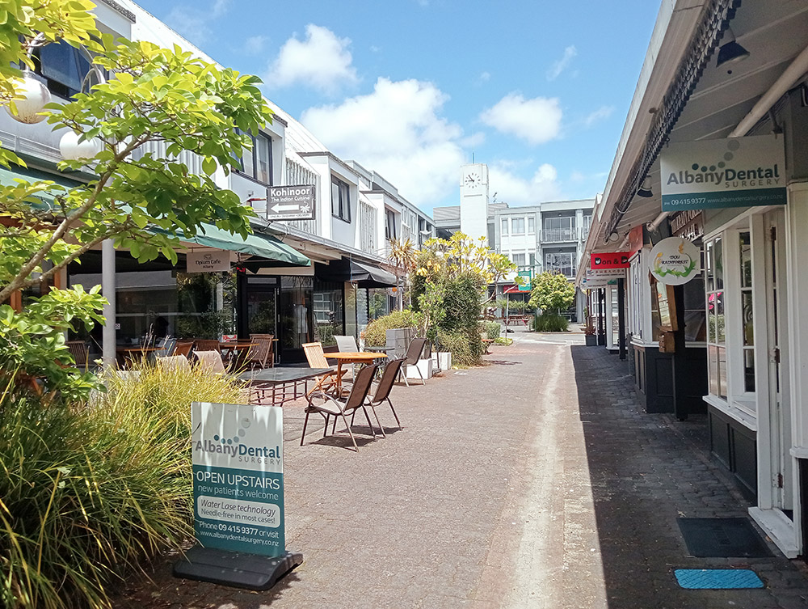
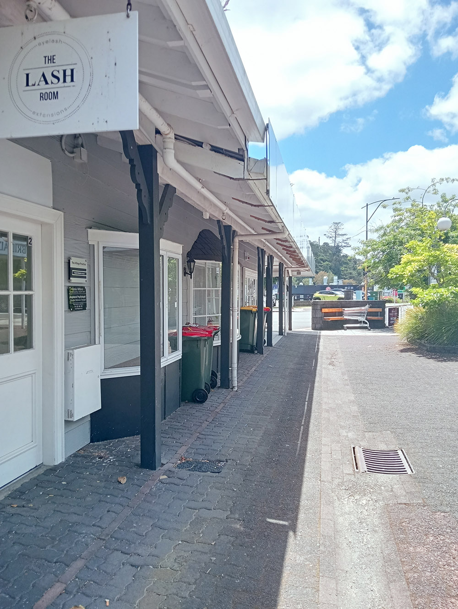
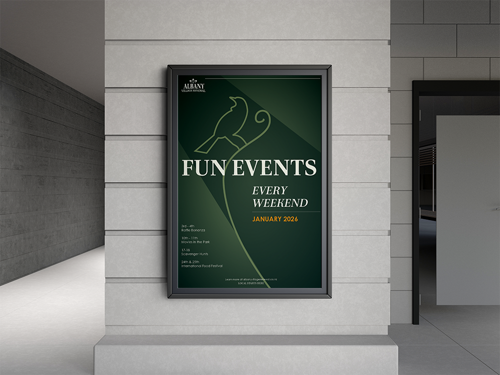
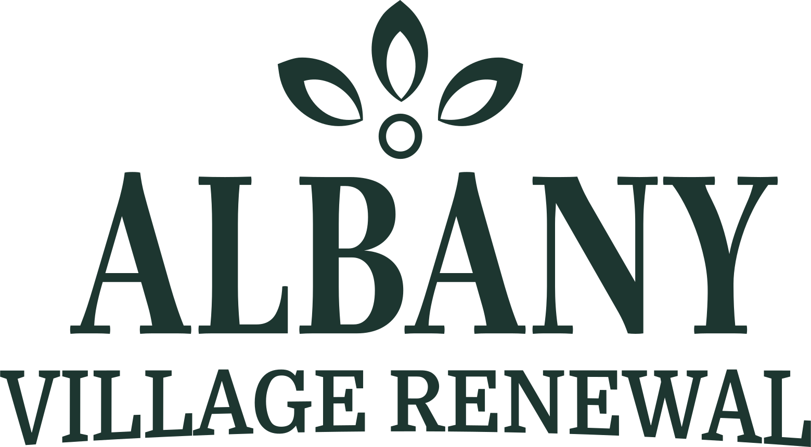

Albany Village Renewal
Local Starts Here
By Beth Kent
A new space for Albany locals to come together for fun and community.
Background
Albany Village is dead. Businesses are shuttered and abandonded. Why? The area is old, dirty, overgrown, and poorly lit.
Albany Village Renewal proposes a solution that creates an exciting and welcoming space for Albany locals to shop, eat, relax, and find community. This would start with a renovation of the area, followed by a month long event campaign to create awareness of the space and build positive local connections.
Promotional Video
This explainer video aims to quickly and effectively get viewers interested in the exciting events happening during the event campaign month. Once interested, they can find more information by visiting our website. It also aims raises awareness of the area and replace any potential negative connotations with positive ones..
How it works!
The website will be the main source of information about what to see and do in Albany Village. It will provide information on upcoming events and what businesses are in the area.
The Campaign
The event campaign will promoted via posters and social media such as facebook and instagram.
Why support us
Albany residents deserve to have a local community space that is welcoming, safe, and family-friendly. This is how we give it to them.
